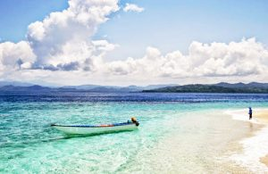

Pelamar CPNS Pemkot Manado Jalani Tes SKD Melalui Sistem CAT di Kantor BKN, Pesan Walikota : Fokus, Tenang dan Jangan Lupa Andalkan Tuhan(manadokota.go.id) Walikota Manado GS Vicky Lumentut menyampaikan terima kasih dan apresiasi yang tinggi
Tempat WisataJalan Roda: Kawasan Kuliner dan Kongko-Kongko
Walikota Lantik Micler Lakat Jabat Sekda Definitif(manadokota.go.id) Walikota Manado GS Vicky Lumentut melantik serta mengambil janji
Ini adalah tempat wisata Manado yang tidak mungkin tidak dikenal oleh pencinta travel. Dengan pemandangan terindah di dunia yang paling menakjubkan, taman laut ini ditetapkan menjadi salah satu situs warisan dunia tahun 2005 oleh Unesco. Maka dari itu, tidak heran kalau banyak biota laut, aneka ragam terumbu karang, ikan yang berwarna warni dan cantik, membuat tempat ini menjadi seperti surga bagi pecinta kegiatan menyelam, snorkeling dan fotografi.
Ada lebih dari 30 titik selam yang ada, dan tentu membuat kita betah berlama-lama menyelam. Jika tidak bisa berenang, tidak usah takut, karena kita bisa berwisata dengan kapal selam khusus dengan kaca transparan sebagai dinding supaya kita bisa melihat pemandangan bawah laut dengan jelas. Meskipun kita bisa datang kapanpun, tetapi yang paling baik adalah bulan Maret sampai Agustus. Air yang lebih jernih sehingga jarak pandang kita lebih jauh dan baik.
Terletak di kelurahan Meras, kecamatan Bunaken dan bisa ditempuh sekitar satu jam dari pusat kota Manado dengan angkutan darat ini kita bisa melihat pemandangan berupa pepohonan yang hijau dan kebun kelapa. Pemandangan yang luar biasa indah akan memanjakan mata kita, dengan pemandangan alami yang menunggu untuk dijelajahi.
Lokasi ini wajib dikunjungi bagi wisatawan yang suka dengan fotografi. Dengan sedikit menanjak ke tempat yang tepat, para fotografer dan juga pendaki serta pencinta alam bisa menikmati pemandangan yang indah dan juga menikmati alam yang segar, objek foto-foto yang menarik dan juga pepohonan yang rindang. Bagi para penggemar fotografi, bisa mendapatkan foto untuk matahari terbit dan juga matahari tenggelam.

Tempat ini tidak kalah indahnya dengan bunaken. Ada 88 spot menyelam yang indah menunggu kita, dan pasti untuk para penggemar snorkeling, diving dan fotografi, tempat ini wajib dikunjungi. Pulau kecil yang terletak di kota Bitung ini tidak terlalu jauh dari Manado. Untuk biaya masuk ke pulau Lembeh ini dibutuhkan uang sebesar 8.000 rupiah. Tetapi kita bisa berkeliling tempat wisata di sekitar Manado dengan menyewa perahu, meskipun membutuhkan biaya yang agak banyak berjumlah kurang lebih 300 ribu rupiah, tetapi kita bisa menyewa perahu untuk berkeliling antar pulau dan ke sekitar Manado. Untuk yang tidak terlalu suka kegiatan air seperti diving dan snorkeling, bisa juga berfoto-foto di sekitar pulau yang airnya jernih dan berpasir putih ini.